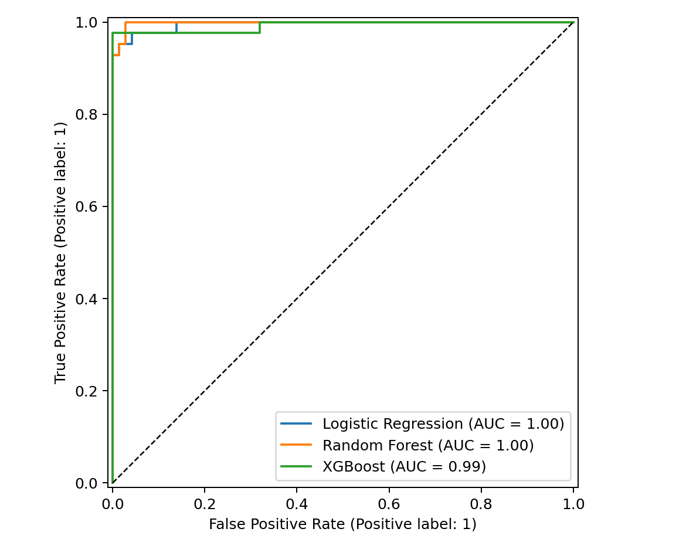
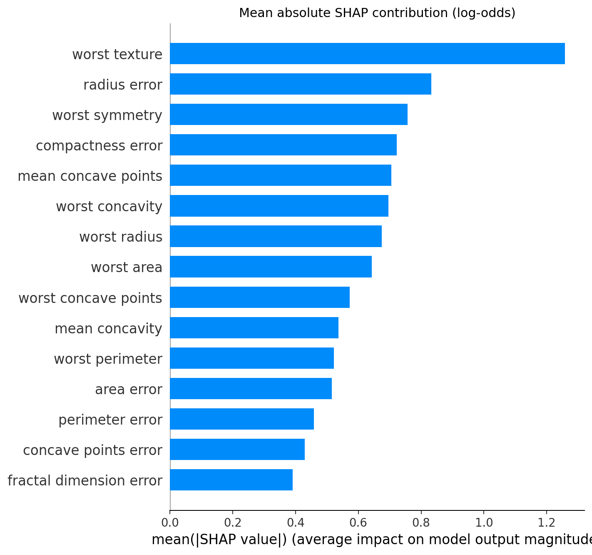

Study A · Classical ML
569 Cases · 30 FNA Features
WDBC Cytology Selection
Candidate screening protocol: 5-Fold Out-Of-Fold (OOF) Cross-Validation on development data.
Development Evidence (5-Fold OOF CV)
| Candidate | ROC-AUC | PR-AUC | Sens. | Spec. | Bal. Acc | Brier | Status |
|---|---|---|---|---|---|---|---|
| Logistic Regression★ | 0.9950 | 0.9941 | 97.65% | 96.84% | 97.24% | 0.0200 | Selected |
| Random Forest | 0.9876 | 0.9859 | 95.88% | 96.49% | 96.19% | 0.0305 | Evaluated |
| XGBoost | 0.9939 | 0.9924 | 95.29% | 98.95% | 97.12% | 0.0225 | Evaluated |
↓ Development Selection: Logistic Regression
★ Why Logistic Regression?
Logistic Regression demonstrated the strongest, most stable diagnostic balance across all five development folds, providing top-tier discriminatory power while remaining fully interpretable with direct coefficient weights.
- Development-only selection: Selected strictly on 5-fold cross-validation evidence prior to evaluating test data.
- Highest ROC-AUC (0.9950) & PR-AUC (0.9941): Outperformed ensemble tree alternatives in discriminatory accuracy.
- Superior probability calibration: Lowest Brier score (0.0200) and highest balanced accuracy (97.24%).
- Convex & robust: L2 regularization prevents overfitting on small clinical cohorts (569 cases) compared to non-linear splits.
↓ Locked Test Report (Post-Selection Verification)
Final Held-Out Report
WDBC Test Split (114 Cases)
Frozen decision rule: raw malignant probability ≥ 0.360
Accuracy
97.37%
ROC-AUC
0.9954
PR-AUC
0.9932
Sensitivity
95.24%
Specificity
98.61%
Balanced Acc.
96.92%
TN: 71 (Benign)
FP: 1
FN: 2
TP: 40 (Malignant)
Post-selection verification report. Held-out test data did NOT drive candidate selection.
Inspect Study A Evidence Figures (ROC Curves & SHAP) ▾

ROC curves comparing cross-validation discriminatory trajectories across classical ML candidates.

SHAP global feature attribution validating primary nuclear contour dependencies.